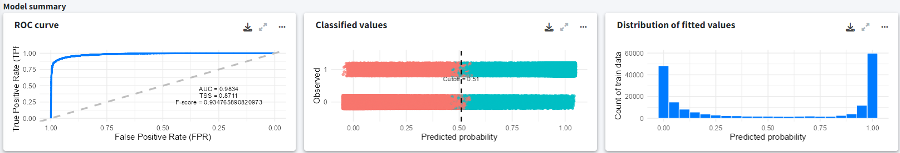

Explore the results
After running your analysis in GLOSSA, the Reports tab presents several outputs and visualizations to help you interpret your species distribution model. This section walks you through each component of the results panel and explains how to explore and understand your model’s predictions, performance, and other key metrics.
Select species or occurrence file
If you’ve uploaded multiple species occurrence files, you can select which species’ results to view using the dropdown menu in the top-left corner. This will update all the plots, so they represent the predictions, validation metrics, and other outputs for the selected species.
For most of the visualizations, you can customize the view using the three dots icon  . This allows you to change how the data is displayed, select between the native range and the suitable habitat model, select different projection layers, or explore various aspects of the model results in more detail.
. This allows you to change how the data is displayed, select between the native range and the suitable habitat model, select different projection layers, or explore various aspects of the model results in more detail.
Key metrics in the first row
At the top of the results panel, you’ll find key metrics summarizing the model’s predictions. First, there’s the species selector, which we discussed above. Next, you’ll see sparklines representing potential suitability for the selected projection scenario in the GLOSSA Predictions box.
Potential suitable area (km2): This metric represents the total area (in square kilometers) predicted to be suitable for the species, calculated based on predicted presence/absence using the computed optimal cutoff.
Mean suitable probability: This value represents the average of all grid cells in the study area. For each grid cell, as we have a posterior predictive distribution, we used the mean of each grid cell to calculate the mean of the whole raster.
These two metrics help you inspect trends in suitable habitat over time. The big value represent the value of the last year, the sparkline shows year-by-year changes, and the displayed percentage indicates the change between the first 5% and the last 5% of the projection period. For instance, if your projection covers 100 years, the percentage shows the difference between the first five years and the last five years.
- Presences/Absences: This box tells you how many presence and absence (or pseudo-absence) records were used to fit the model, providing valuable information about the sample size.
In the example below, the habitat suitability has a decreasing trend, with around a 10% reduction from the beginning of the projection period. The model was fitted using a total of 800 points.

These metrics give you a quick overview of your model’s predictions and the data used for fitting.
Explore input data
On the two panels on the right we can explore the environmental variables used to fit the model and the occurrences that were kept and discarded (duplicates, thinning, missing values, etc.). These two plots are very useful because you can explore patterns in the environmental variables that could be related to patterns in species occurrences and predictions comparing with the plot on the left that we will discuss next. The environmental variables are represented in the scale they were used to fit the model, so if you choose to standardize you’ll see the standardized covariates. And the plot of the occurrences allows you to know which records has been filtered by GLOSSA.

GLOSSA projections
This section provides a map showing the predicted species distribution across the study area. The heat map uses color gradients to represent the probability of species presence, where warmer colors indicate higher probabilities, and cooler colors indicate lower probabilities or unsuitable habitats. You can adjust the view to show different projection layers, timestamps, and metrics from the model’s posterior distribution (e.g., mean probability, median, or quantiles).
Using the three-dot icon  , you can open the sidebar to customize the display:
, you can open the sidebar to customize the display:
- Choose between predictions based on fitting layers or projection layers.
- Toggle between viewing the native range or the suitable habitat predictions.
- Select which value from the posterior distribution to display (e.g., mean probability, median, etc.).
- Overlay points used to fit the model to visualize how occurrence data aligns with the predictions.

Changing the projection scenario in this panel will also update the sparklines at the top of the results panel, reflecting the trend in habitat suitability for that scenario.
Additional results
In the next row of the results panel, you can view the additional analyses that you requested in GLOSSA:
- Functional responses: Shows the functional responses for each environmental variable, showing how changes in each variable affect the probability of species presence. These curves are partial dependence plots that provide insights into the environmental factors driving species distributions.
- Variable importance: The variable importance plot shows how much each environmental variable influences the model’s predictions. GLOSSA uses a permutation-based approach to measure the effect of shuffling each variable’s values on the model’s prediction accuracy. Variables with high importance scores play a larger role in predicting species presence, helping you identify the key drivers of habitat suitability.
- Cross-Validation: If you enabled cross-validation, this panel shows the performance metrics from k-fold cross-validation. The radar plot displays metrics such as precision, sensitivity, specificity, false discovery rate, F-score, accuracy, and TSS (True Skill Statistic).
Model summary
The model summary panel provides key validation metrics for the model fitting:
- ROC curve: This plot evaluates the model’s ability to distinguish between species presence and absence across different probability thresholds, showing the AUC (Area Under the Curve) as an overall measure of accuracy.
- Confusion matrix plot: This plot breaks down true positives, false positives, true negatives, and false negatives, and shows their predicted probability with the computed optimal cutoff. classification performance.
- Distribution of fitted values: This histogram shows the distribution of predicted probabilities across the study area.

Exporting plots
Once you’re satisfied with your results, you can use the download icon  to export any plot or visualization. Export formats include PNG, JPG, SVG, and PGF. You can also adjust the height and width of the exported plot.
to export any plot or visualization. Export formats include PNG, JPG, SVG, and PGF. You can also adjust the height and width of the exported plot.
Conclusion
You’ve now learned how to navigate the GLOSSA report panel to explore key metrics, validate model performance, and gain insights into the factors driving species distributions. The next step is to export your results, save the projection rasters, the data used for model fitting, and other analysis outputs: Exporting results.